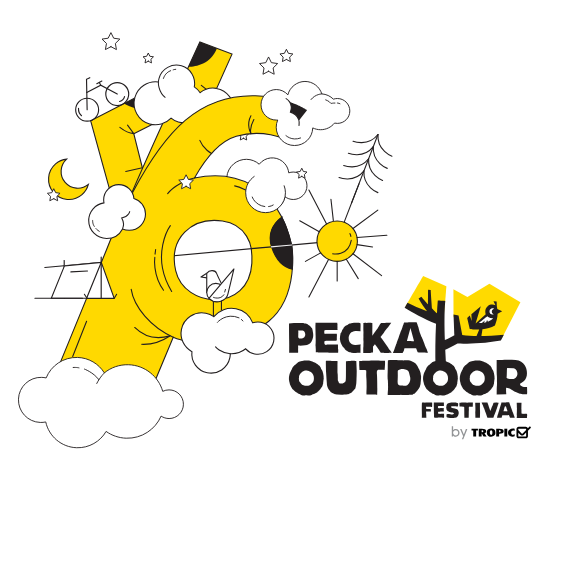

Ekstremni - regularni sportovi
Razlika izmedju regularnih i ekstremnih sportova je kolicina fizicke spreme koja je zahtjevana od individue. Glavna, ocigledna razlika je takodjer rizik od povrede zbog raznih faktora kao brzina, visina ili generalno opasna sredina.
Od ekstremnih sportova licno sam se bavio sa dva - Sportsko penjanje i "Mountain biking" Penjanje mi je ostalo u sjecanju kao najzanimljiviji sport koji sam ikad probao i definitivno se planiram vratiti ozbiljnijem treningu u sali i na otvorenom. 2018. godine sam popeo mnostvo smjerova na outdoor Pecka festivalu. Nazalost te iste godine nisam uspio doci na Drill 'n' chill festivala. Oba festivala se odravaju mjesec dana jedno od drugog, u julu i avgustu. Datumi se pomjere u zavisnosti od vremena.


Jos slika na temu